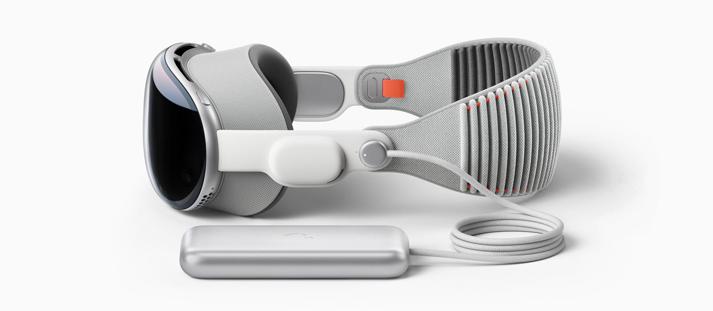
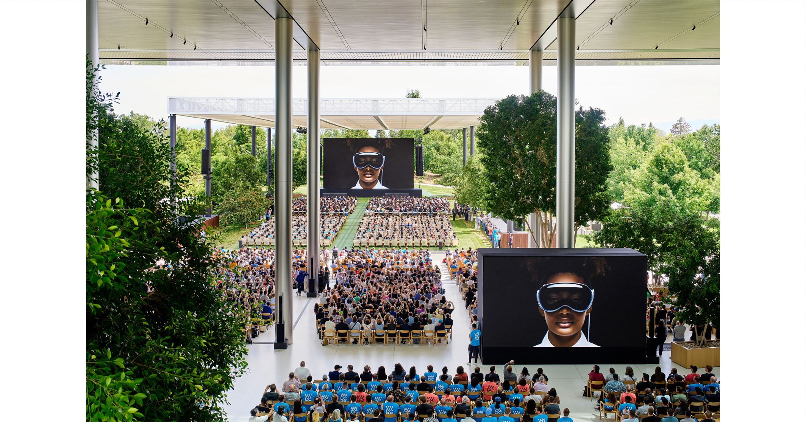
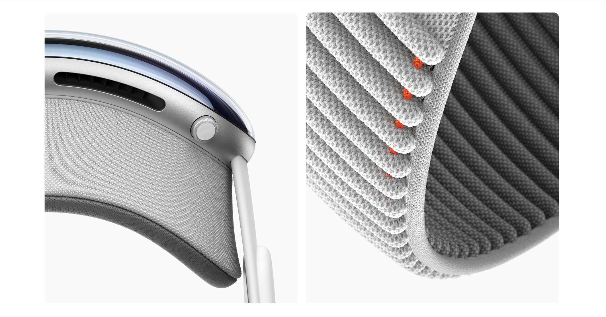
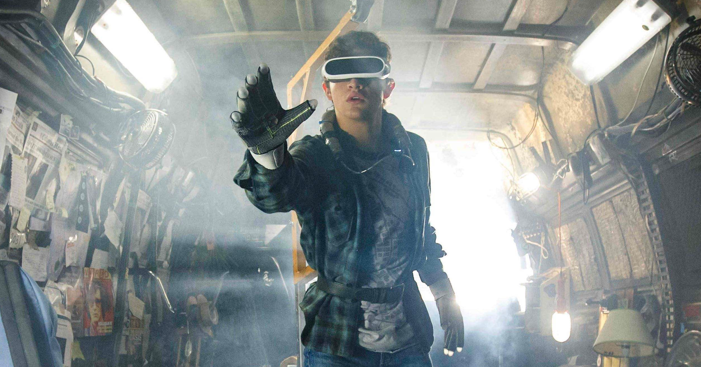
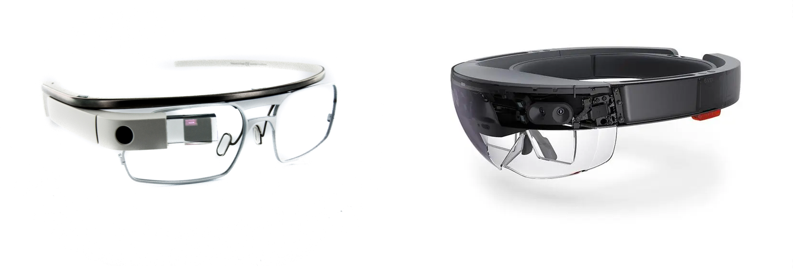
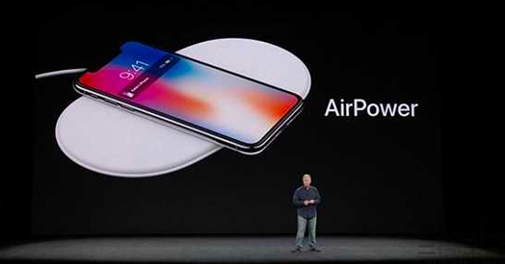
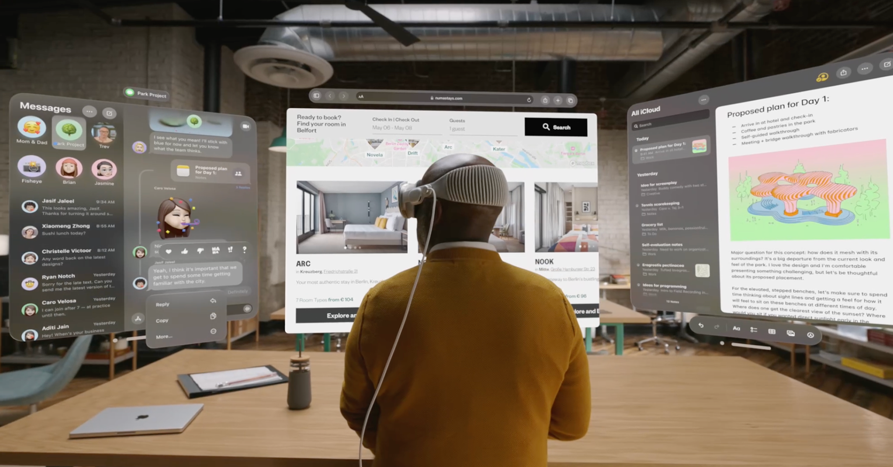
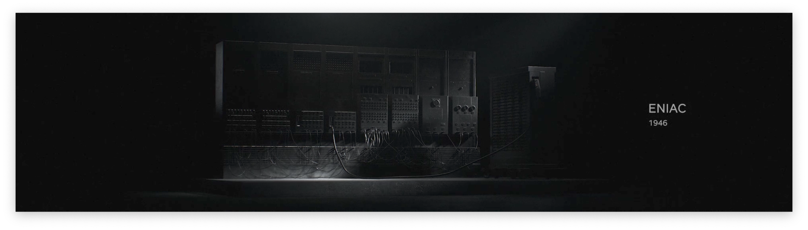

ユメノトビラ（Yumenotobira, 夢の扉）
That’s one giant leap for Apple, one medium step for mankind.
原因嘛，让我想想。
WWDC 23 举办的那天，是一个万里无云的好天气。
即使前半场的更新了无新意、毫无生趣，也不妨碍大家报以最大的热情等到最后，只为了瞥见一眼 Apple 将要许诺的未来的期待，好在它没有让我们等太久。

Vision Pro 的待遇远远超过了 Sneak Peek。
毕竟它是「One More Thing」，这个称谓有着它独特的存在价值，类似「Apple 关注者的老朋友」。这说明不仅是我们，即使是 Apple 自己，也对它寄予厚望，期待它能惊艳亮相。Vision Pro 绝对不是 Mac Pro，简单与各位寒暄就返回幕后等待登场的时机；Vision Pro 也绝对不是 AirPower，通过证件照打个照面之后就沉寂在历史的深处。
这是一场「Developer Conference」，但作为硬件产品的它牢牢占据这本不该属于它的舞台的 C 位。
Apple Vision Pro 的玻璃无缝融入定制的铝合金框架，于用户的面部轻轻弯曲，而模块化的部件系统 —— 包括 Light Seal 和 Head Band —— 可以实现量身定制的贴合度。
The glass of Apple Vision Pro flows seamlessly into the custom aluminum alloy frame, gently curving around the user’s face, while a modular system of parts — including the Light Seal and Head Band — allows for a tailored fit.

精致且优雅的曲面玻璃和航空铝机身，精致且高效的双驱动处理核心，精致且精密的环境信息捕捉，精致且易用的广域系统交互，精致且关怀的人因感官优化…… 舞台上的 Vision Pro 像是一场梦，一场「精致且美妙」的梦。
Apple 是很擅长讲故事的，一个 Vision（愿景）的化身确实值得如梦如幻的舞台，它的 UX 让所有现有的 XR 产品看起来像是个玩具。
只不过看起来，Vision Pro 出生就背上了「原罪」。
对于它来说，最大的「罪过」，就是不够「领先」。
现在的 Vision Pro 无法满足大家长久以来对 Apple 的期待。纵使它全方位领先竞品，大幅度创新交互，但是依旧缺失了新物种带给旁观者的那种「革命性」。
这不只是这设备本身的问题。

这是行业的「原罪」。XR 产业发展了这么多年，依旧不存在一个「定义前进方向」的「实用化场景」。因为我们都知道它的终局是什么样：《头号玩家》或者《刀剑神域》。彻底的沉浸是永远的「终极理想」。你的视野延伸到哪里，它的视角就延伸到哪里，画面可以流畅延伸至这世界的任何一个角落。保有这样的预期但无法达成这一点的如今，如何巧妙地暗示你接受现在的「被阉割的体验」，不同的厂商交出了不同的答卷，但最终又殊途同归 —— 一块「随身巨幕」或者一个「专属游戏厅」。
这实在是像智能手表，百花齐放后归于运动检测。只不过看似智能手表的终点是「运动」，核心其实是它作为可穿戴设备能让我们触手可及的对「健康」的预期。Apple Watch 发布时的健康检测功能远不及竞品，但它一直走在正确的道路上，现在越来越细分，而对「健康」的关注越来越深入。
回到 MR 设备，我有着同样的疑惑：我们是否有那么期待一块「随身的大屏」？
但现实似乎从来就不是那样。
我们从来都不期待随身的大屏，我们期待的是「触手可及的信息」。
Apple 对 Vision Pro 的定义从来就不是什么 XR Headset，而是「Apple’s revolutionary spatial computer」。
所谓「革命性的空间计算机」，这给予了 Vision 无限的 Vision（愿景）。
未来的 Vision Air（就当它或许存在吧）会不会只满足「随身大屏」的需求，我不知道。但就和我在 谈论今年的 WWDC 时说的那样：「在前半程深耕红海的过程里，Apple 从没有放弃在蓝海里畅游，稳健地走着自己的步伐，清楚自己对未来的愿景究竟是什么」：
「通过手势和声音」等自然方式交互的准则，给予用户「触手可及的信息」。
我想看看 Apple 描绘的未来，因为我也期待这样的未来。
はいはいあの子は特別です
是的对的就是那孩子是特别的
我々はハナからおまけです
没错从开始我们就是作为陪衬
お星様の引き立て役Ｂです
只是为了衬托那颗星的配角Ｂ
全てがあの子のお陰なわけない
全都是承那孩子的恩惠，才怪
Vision Pro 诞生就避免不了和「班里的大家」对比，而这次考试的得分可能有点尴尬。它确实不够领先，同时同桌 M 同学正在加快补习的步伐。据称高通下一代的 AR 平台就能赶上 M2 的性能了，时间就在今年年底，而那时 Apple 还并未在北美发售。Apple 在硬件上的壁垒在算法和作为环境协处理器的 R1。我相信如果一个能达成 90% 体验但是售价只需要 50% 的 Meta Quest 放在各位面前，各位都会犹豫最终的选择。
是的，我甚至都会犹豫要不要选 Meta Quest。
不知在什么时间点刷到过一条啁啾解释说，因为 Apple 也没有能力在物理层面解决 AR 镜组在显示应用程序时导致的反光问题，所以为了以后的 Vision 系列产品回到正常的 AR 路线，Vision Pro 利用 EyeSight 让用户提前适应使用应用软件时眼前会发光这件事。
是的，Apple Vision Pro 很显然是在用做 VR 的思维做 AR 产品。

Apple 从来就不希望把你捆绑在一个虚拟的世界中，EyeSight 希望你继续和深处的世界保持关系 —— 即使需要使用调用原深感摄像头实时采集周边信息这种看似滑稽且性能开销极大的方式。真正聚焦 AR 技术路线的设备应该是类似 Google Glass 或者 Microsoft HoloLens 这种设备。而 Vision Pro 随身只有 2 小时的续航，剩下的时间里，由于设备实际上是在用 VR 技术解决 AR 应用，环境视角全靠前置原深感摄像头捕捉，和戴着纯 AR 技术路线的产品不一样，Vision Pro 断电之后，眼前直接堕入黑暗。
啊对，眼前全黑的话就可以之前刚刚更新由 AI 赋能的失能辅助功能了。太棒了！完美符合我对科技和未来的想象。
但 Apple Vision Pro 依旧是我至今为止看到的可能性最大的平台。
或许是最高的亮度和清晰度，或许是最宽广的视场角，或许是最出色的场景感知算法，或许是最优秀的人因交互界面…… 这给它带来了无限的可能，且 Vision Pro Powered by Apple。
「即使它目前不领先也不妨碍它未来领先。」
……虽然很想这么说，但是在这个技术大爆炸的时代，技术从来不能变成壁垒。
而更重要的，领先一步是先进，领先两步是先驱，领先三步是先烈。
Vision Pro 并不领先。这是它的优势，也是它的弱点。
站在这个角度，它确实很类似已经远离我们记忆很多年的产品，它有优秀的愿景和有优雅的使用方式，但相对应的，那台设备却没有一个好结局 —— AirPower 无线充电板。

Who wants a stylus？
但是 Vision Pro 又很像 AirPower。大家执着于 AirPower 并不是因为它是无线充电板，而是因为它是「Apple 的」无线充电板。同样的，大家着迷于 Vision Pro 并不是因为它是 XR Device，而是因为它是「Apple 的」XR Device。
对 Vision Pro 来说，更大的问题从来就不是良率和生产能力，更不是价格。（毕竟你都选择 Apple 了还考虑价格？）Apple 如何规划 Vision Pro 的受众面向和预期才是重点。
只不过，扩大受众的「面向」似乎从来都不是 Apple 考虑的问题。从前不是，现在不是，未来看起来也不会是。
还记得 Vision Pro 是什么嘛？「Apple’s First Spatial Computer」。
「Computer」是在现在这样一个 「高度发达的科技产业社会」 中最宽泛无用的字眼，它可以用来指代你身边所有的数码科技产品，无一例外，都可以被称作「计算机」，这是它得以工作的最基础要求。Apple 或许也没想好它能做什么。它通过项目预期设定了「通过手势和声音」等自然方式交互的准则，赋予了它能优秀地做好市面上所有 XR 产品能做到的事情的能力，给予了它极大的未来发展预期，之后便束手无策了。
这看似和我之前的意见有些矛盾，但 Apple 的愿景始终未变：我们期待的是「触手可及的信息」。但「How to」这问题，现在的 Apple 没给出明确的答案。

纵使日益推升的「平台化」热潮让我对独立开发者的创作热情抱持悲观，ARKit 七年来也未曾诞生多么眼前一亮的产品，但是 Vision Pro 是比 iPhone 更整洁的画布，或许这就是它选择了在 WWDC 揭幕。
未来是属于 Developers 的，Apple 急需要各位为这台设备指明方向。
回到 Vision Pro 本身，一台使用 M2 芯片和 4K+ 荧幕的便携式 Mac 似乎确实值当 2 万多的价格。不过鉴于 visionOS 的适用场景，或许应该是「一台使用 M2 芯片和 4K+ 荧幕的非便携式 iPad」这个形容更为合适，那这个价格比它的适用场景更加「超乎想象」。
当然，Vision Pro 能做到的，iPad 不一定能做到。
但是如今 iPad 能做到的事情，现在的 Vision Pro 也不一定能做到。
例如 All Day Battery Life.
在这个节点，我突然很想聊聊「轻小说」。
我个人对轻小说这个体裁没什么傲慢与偏见，莫不如说站在个人阅读趣味的角度我相当喜欢这个体裁。只不过这类型里的大多数作品随着时代的发展和阅读趣味的变化，日渐展现出强烈的对思考的消解和对情绪的渴求，让我很难再从这种类型的文本里汲取力量。文字间莫名生出的一种糖水类自我激励式的无所谓感，如此强烈且迅速地消磨意义的传播方式除了作者的自我毁灭我只能想到 TikTok。
或许事实正是这样，变化的不仅是载体本身。轻小说降低的阅读成本并没有让严肃文学就此消失，但是短视频的冲击确实让严肃文学成为了小众的吟唱。
我很喜欢《刀剑神域》，它是我轻小说的启蒙。它给予了我对未来的愿景，也让我开始热爱关注周围一切的革新。这些闪光点连成一条线，诞生了这数十年来人类历史上最伟大的技术革命，无论是个人电脑还是随身听、智能手机还是未曾了解到的 XR 技术的未来，都是一样。

智能手机没有让个人电脑消失，XR 技术的发展应该在短时间内相当难抹杀掉智能手机的存在，但是它有成为巨浪的磅礴力量，我们只不过早早地听到了潮水的声音。
That’s one giant leap for Apple, one medium step for mankind.
这是苹果的一大步，也是人类历史上「中等」的一步。它回声很长，但不够坚定。
现在的 Vision Pro 能做的依旧太少。它只能拍摄 720P 的空间视频，虚拟显示器的分辨率也未能达到 4K，无法解决镜片可能产生的显示和视觉问题，更无法解决设备本身的重量和能耗产生的限制…… 这条路依旧很长。Apple 向来不是在最开始就拿出最终的解决方案，XR 或许也比历史上的每次踏步都更加泥泞且复杂，我们可能需要等到 Vision 4 Pro 才能见到坚实的回响，但由 Vision Pro 顶开的这扇「梦的门扉」，它足够引人入胜。
Apple 反复证明过自己有改变世界的创新的能力，我希望这一次它依旧是。
无论大家如何看待这台设备，无论大家对它有怎样的期待，我们都不得不承认，Apple Vision Pro 就是最近的未来。
或许这未来并不会如我所料的精彩，but life goes.
BTW，「梦的门扉」应该配「造梦引擎」，或许这就是为什么没更新 Pro Display XDR（笑）。